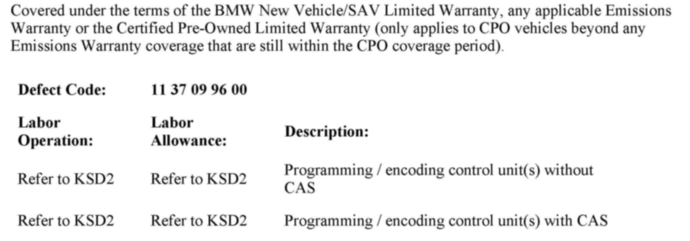

Engine Controls - MIL ON, DTC 2A38 Stored
SI B 12 07 09Engine Electrical Systems
March 2010
Technical Service
This Service Information bulletin supersedes SI 12 07 09 dated March 2010.
[NEW] designates changes to this revision
SUBJECT
N51/N52K - Service Engine Soon Lamp Is On with Fault Code 2A38 Stored
MODEL
E82, E88, E90, E92, E93 with the N51 engine produced up to 4/09
E70 with the N52K engine produced up to 4/09
[NEW] E60, E61, E82, E83, E88, E90, E91, E92, E93
[NEW] with the N52K engine produced up to 9/09
SITUATION
The Service Engine Soon (MIL) lamp is illuminated and fault code 2A38, "Valvetronic servomotor sluggish movement or open circuit", is stored in the DME.
This fault could occur if the engine is operated at idle for an extended period of time.
CAUSE
DME software calibration error
CORRECTION
Do not replace any parts. If other DME faults are present, they must be resolved first, using the most recent version of ISTA.
Only reprogram the vehicle using the most recent version of ISTA/P, if the current integration level is lower than that specified by Series and engine variants, as listed below.
E82, E88, E90 with the N51 engine produced up to 4/09
Program the vehicle to E89X-09-03-520 or a more recent version.
E92, E93 with the N51 engine produced up to 4/09
Program the vehicle to E89X-09-09-515 or a more recent version.
E70 with the N52K engine produced up to 4/09
Program the vehicle using to E070-09-03-525 or a more recent version.
[NEW] E82, E88, E90, E91, E92, E93 with the N52K engine produced up to 9/09
Program the vehicle to E89X-09-09-515 or a more recent version.
[NEW] E60, E61 with the N52K engine produced up to 9/09
Program the vehicle to E060-09-09-515 or a more recent version.
[NEW] E83 with the N52K engine produced up to 9/09
Program the DME using ISTA/P 2.37.0 or higher refer to SI B12 17 07 for additional information.
After programming is completed, return to the ISTA session to clear faults and DME adaptations.
Perform the test module "B1214_NG6VVAL_Learning Valvetronic Stops".
Note that ISTA/P will automatically reprogram and code all programmable control modules that do not have the latest software.
For information on programming and coding with ISTA/P, refer to CenterNet / Aftersales Portal / Service / Workshop Technology / Vehicle Programming.

WARRANTY INFORMATION